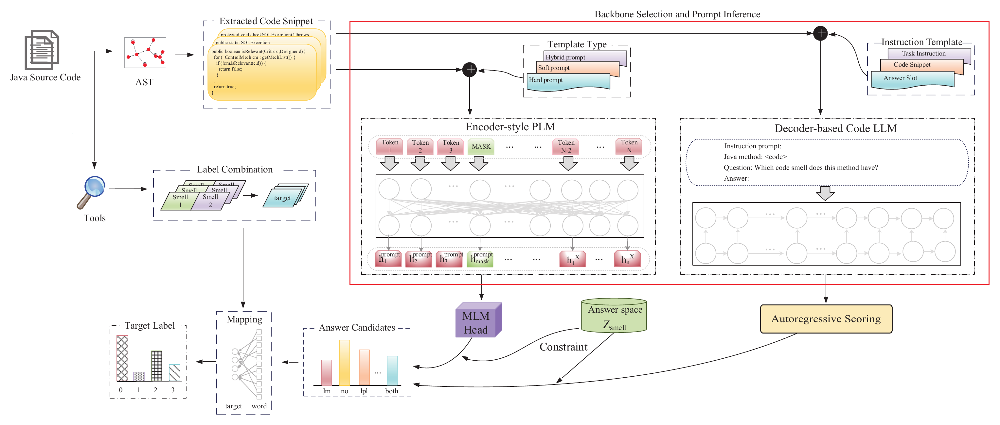

Software engineering research
PromptSmell
Not All Metrics Are Necessary: Multi-label Code Smell Detection with Prompt Learning and Large Language Models
PromptSmell formulates multi-label code smell detection as prompt-based prediction from raw Java methods. It supports encoder-style pre-trained code models and decoder-based code LLMs without using handcrafted software metrics as model inputs.
Method
PromptSmell extracts method-level source code through AST analysis, combines the Long Parameter List and Long Method decisions into four target labels, and maps model predictions through an architecture-specific prompt and shared answer space.

Main results
PromptSmell outperforms classical neural models, classifier chains, and a modern code-pretrained baseline. The decoder-based DeepSeek-Coder instantiation obtains the strongest unified-test result.
| Model | Accuracy | Precisionw | Recallw | F1w |
|---|---|---|---|---|
| TextCNN | 58.64% | 41.09% | 58.64% | 47.64% |
| BiLSTM-Attention | 60.64% | 55.77% | 60.64% | 53.30% |
| TextRCNN | 80.96% | 80.84% | 80.96% | 79.66% |
| CC | 51.78% | 67.46% | 65.24% | 66.27% |
| GraphCodeBERT | 84.22% | 84.21% | 84.22% | 83.92% |
| PromptSmell-UniXcoder | 89.41% | 89.28% | 89.41% | 89.17% |
| PromptSmell-DeepSeek-Coder | 94.68% | 94.67% | 94.68% | 94.65% |
Mean values are shown. Standard deviations and statistical tests are reported in the manuscript.
On six unseen projects, PromptSmell-DeepSeek-Coder reaches average accuracy, weighted precision, weighted recall, and weighted F1 values of 94.37%, 98.54%, 94.37%, and 96.15%, respectively. The corresponding average weighted F1 with UniXcoder is 94.35%.
Performance with limited labeled data
Both architectures improve rapidly with small labeled training sets. At 256 samples, their weighted F1 values already exceed the strongest zero-shot SOTA LLM result evaluated below.
| Training samples | UniXcoder F1w | DeepSeek-Coder F1w |
|---|---|---|
| 0 | 22.04% | 16.59% |
| 64 | 50.26% | 57.73% |
| 256 | 79.12% | 76.05% |
| 512 | 86.34% | 83.54% |
| 1,024 | 87.48% | 86.06% |
The zero-sample rows use each PromptSmell backbone's architecture-specific prompt formulation; the remaining rows use labeled training subsets.
Zero-shot context with SOTA LLMs
This RQ5 comparison uses the same test set, four-label mapping, and evaluation metrics. The SOTA LLMs receive direct task instructions without labeled demonstrations or task-specific fine-tuning.
| Model | Accuracy | Precisionw | Recallw | F1w |
|---|---|---|---|---|
| PromptSmell | ||||
| UniXcoder | 30.52% | 33.76% | 30.52% | 22.04% |
| DeepSeek-Coder-1.3B | 32.06% | 11.48% | 32.06% | 16.59% |
| SOTA LLMs | ||||
| GPT-5.6 Sol | 63.17% | 75.11% | 63.17% | 59.97% |
| GPT-6 Astra | 71.75% | 80.46% | 71.75% | 66.74% |
| DeepSeek V4 Pro | 75.09% | 81.31% | 75.09% | 72.83% |
| Gemini 3.8 Flash | 74.83% | 80.98% | 74.83% | 71.91% |
Each SOTA LLM result is from one zero-shot round. PromptSmell's zero-sample rows are included to place the direct zero-shot results in context.